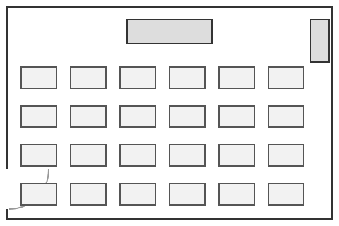

Laboratorio di informatica - ITT "G. Marconi", Rovereto
Attrezzature del laboratorio
In questa pagina: le caratteristiche delle
postazioni, il software installato, la
procedura di accesso e la
pianta dell'aula.
Caratteristiche di una postazione
Le 24 postazioni sono identiche fra loro. Questa è la scheda tecnica di
ciascuna.
- Processore
- Intel Core i7
- Memoria
- 16 GB
- Sistema operativo
- Windows
- Schermo
- 24 pollici
Software installato
L'ordine di questo elenco non ha significato: i programmi sono tutti disponibili su tutte le postazioni.
- Visual Studio Code, con le estensioni per il lavoro sul web
- Git
-
Browser:
- Java Development Kit, usato nel laboratorio di Informatica
Procedura di accesso alla postazione
Qui l'ordine conta: i passi vanno seguiti nella sequenza indicata.
- Accendere il calcolatore e attendere la schermata di accesso.
- Inserire le credenziali della casella d'istituto.
- Attendere il completamento dell'accesso al profilo, che la prima volta richiede qualche minuto.
- Aprire Visual Studio Code e riaprire la cartella del repository personale.
- Prima di spegnere, salvare il lavoro con un
commit e riportarlo su GitHub.
Pianta dell'aula
Le postazioni sono disposte su quattro file da sei. La numerazione parte
dalla fila più vicina alla cattedra e procede da sinistra verso destra.

Torna alla pagina principale
Pagina aggiornata il 19 ottobre 2026.